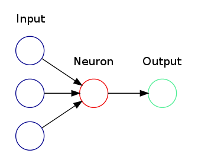
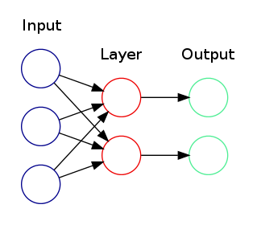
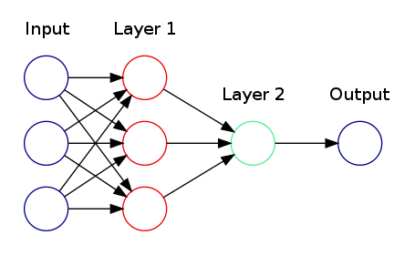

Created Friday 15 November 2013
A neural network is basically a set of neurons working together in sequence and in parallel. The simplest neural network consists of a single neuron.

The diagram above shows a neural network made up of a single neuron with 3 inputs and 1 output.
The next level of complexity is to have neurons in a layer work together in parallel.

The diagram above shows a single layer neural network with 2 neurons, 3 inputs, and 2 outputs.
The next level of complexity is to have layers work together in sequence.

This diagram shows a multi-layer neural network with:
- 3 inputs
- 1 output
- An input layer with 3 neurons
- An output layer with 1 neuron
Neural Network Families
Unfortunately, a "universal" neural network suitable for any type of problem does not exist. Each problem type usually requires a specialized neural network. For example, convolutional networks were built for handwriting recognition. The neural networks defined in the introduction are fully connected networks because each neuron is connected to all of the inputs in the previous layer.
When Is a Neural Network NOT Appropriate?
Following are some guidelines on when you should use another approach:
- Can you write down a flow chart or a formula that accurately describes the problem?
- Is there a simple piece of hardware or software that already does what you want?
- Do you want the functionality to "evolve" in a direction that is not pre-defined? If so, then consider using a Genetic Algorithm (that's another topic!).
- Is generating input/output examples hard?
- Is the problem is very "discrete"? Can the correct answer can be found in a look-up table of reasonable size? If so, then use a look-up table.
- Are precise numeric output values required?
Conversely, here are some situations where backpropagation might be a good idea:
- A large amount of input/output data is available, but you're not sure how to relate it to the output.
- The problem appears to have overwhelming complexity, but there is clearly a solution.
- It is easy to create a number of examples of the correct behavior.
- The solution to the problem may change over time, within the bounds of the given input and output parameters (i.e., today 2+2=4, but in the future we may find that 2+2=3.8).
- Outputs can be "fuzzy", or non-numeric.
Source: http://www.seattlerobotics.org/encoder/nov98/neural.html
Formal Definition
Neural networks can be thought of as a function of the input and the weights of the neurons. More importantly, if each neuron represents a continuous and differentiable function, then the entire network is a continuous and differentiable function. This property is important for learning. (See +BackPropagation).
Backlinks:
NeuralNetworks:History NeuralNetworks:BackPropagation:BatchModeBackPropagation:InitializeWeightsAttachments:
| ActivationFunction | 4.10kb | |
| Appendix | 4.10kb | |
| BackPropagation | 4.10kb | |
| ConvolutionalNetwork | 4.10kb | |
| diagram.dot | 536b | |
| diagram.png | 12.4kb | |
| diagram001.dot | 603b | |
| diagram001.png | 18.1kb | |
| diagram002.dot | 839b | |
| diagram002.png | 21.5kb |
{kind=link}
{kind=link}
{kind=link}